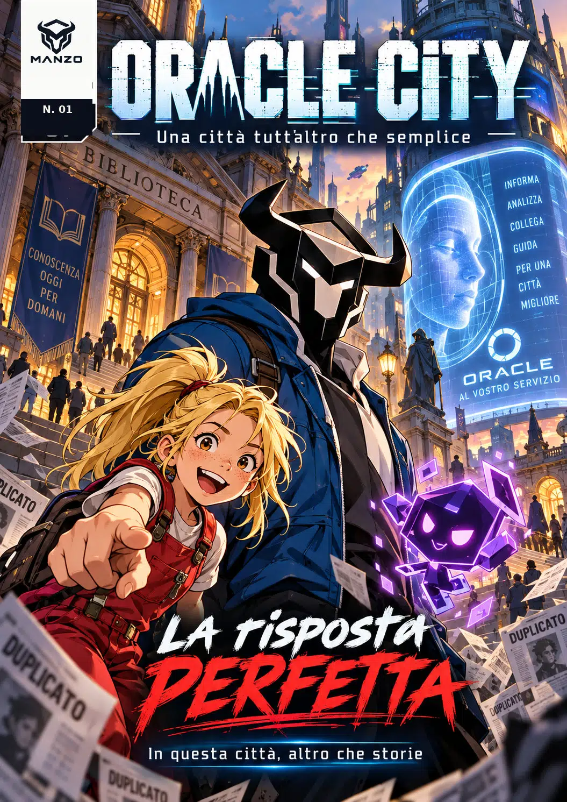

MANZO AI · Risorse
MANZO AI · RisorseFumetto digitale originale · Numero 01
ORACLE CITY
Una città tutt’altro che semplice
La risposta perfetta — In questa città, altro che storie.
Una risposta sicura può essere sbagliata. Lia, Manzo e Glitch scopriranno perché.

Copertina1 di 10
La risposta perfetta
In una città che promette risposte per ogni domanda, una notizia sulla biblioteca sembra definitiva. Ma un cartello racconta una storia diversa. Quante copie servono per trasformare una voce in certezza?
Edizione digitale compatta · 10 pagine illustrate (copertina + 9 tavole) · Lettura da sinistra a destra · Italiano · © 2026 MANZO AI. Opera originale realizzata con strumenti di AI generativa e revisione editoriale.